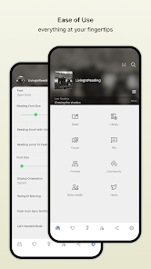
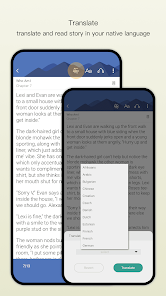

FanFiction.Net 到底值不值得掏钱：一个同人读者的付费决策账本
FanFiction.Net 本身免费，但广告、排版粗糙、多设备同步有坑。要不要为它花钱？分轻度、主力、重度三类读者算这笔账。
开头：它到底值不值得掏钱？
坦白说，这个问题我琢磨了快一年。
作为一个在 FanFiction.Net官网 上刷了上千章同人、Follow 了两百多个连载的读者，我一直在问自己：要不要为更好的阅读体验花钱？ 毕竟 FF.net 本身完全免费——没有会员墙、没有付费章节、没有解锁门槛，全站几十万 fandom、几百万篇故事，点进来就能看。

但免费的代价也很扎眼：App 里插广告、章节末尾塞推广条、排版十年如一日地简陋、多设备同步时已下载的章节不会物理迁移，换手机必须重新下载一遍。
所以这篇不是评测，是账本。我把能用得上的付费选项列出来，按三种使用强度算时间账和体验账，最后给一个三秒能对号入座的结论。
先说好：我不会把 FF.net 和 AO3 放在一起比谁好谁坏——两个平台用户画像不同，比了也没用。这篇只聚焦"用 FF.net 的人要不要为它或它的生态花钱"。
定价拆解：免费版给了什么、要什么
App 直接从官方下载就能装，零门槛。FF.net 本身没有付费版本。它的商业模式是广告——App 启动时弹开屏广告、章节之间插 banner、故事详情页右侧有推广位。这意味着：
免费版给到的：全站内容零门槛访问、无限 Favorites 和 Follows、Follow 故事有推送通知、Favorites 云端同步、My Stories 发布和管理、Document Manager 写作辅助工具、论坛和评论区参与。说实话，该有的功能一项没少。
免费版要你付出的代价：每次打开 App 可能遇到 3-5 秒开屏广告、阅读过程中每隔几章会遇到中间插的推广条、App 排版使用的是 2015 年的样式（字号和行距只能改基本档，没有阅读器那种精致的翻页模式）、已下载章节的物理文件只存在当前设备（换手机要手动重下）、阅读进度不跨设备同步，具体哪些云同步哪些不云，FanFiction.Net文档里有完整的对照表。
目前 FF.net 也没有官方的"去广告"或"高级会员"付费通道——如果你要更好的体验，得去买生态里的第三方方案。能买到的东西大概分三类：第三方同人阅读器（带去广告 + 优化排版 + 多平台支持）、FF.net 辅助脚本的高级版（比如跨 fandom 批量下载、智能更新提醒）、以及一些面向作者的写作工具订阅（比如 Grammarly 类的拼写检查、章节排版模板）。
所以这篇"账本"里的"花钱"，指的是为了让 FF.net 的使用体验更好、或者为了弥补它的某些功能短板而掏钱的所有动作。
算账：三档用户各掏多少才合理
我把 FF.net 的读者按每天使用时长分了三档，算一算每档人花多少钱、换回来的时间值不值。
轻度用户（每天 15 分钟以内，追更 10 个故事以下）
画像：午休刷一刷、睡前看几章、周末集中读一会儿；Follow 的故事都是完结了或者更新很规律的，不用天天蹲推送；换手机频率大概一两年一次。
免费版够不够：完全够。开屏广告等 5 秒跳过不影响心情；排版简陋但故事内容本身才是重点；Favorites 和 Follows 云端同步已经覆盖了基本需求，换手机重新下载 10 个故事也就两三分钟的事。
建议掏钱的地方：零。如果广告偶尔让你不爽，花一次性几块钱买个去广告插件或者 root/越狱后装个拦截脚本就行，但意义不大——你每天总共才看十几分钟，跳过几次广告真的不构成痛点。
结论：别花。这钱留着买想追的正版周边更值。
主力用户（每天 30 分钟到 1 小时，追更 10-50 个故事）
画像：通勤路上必刷、Follow 里有一半是周更或日更的连载、看到心动的新作者会一口气翻完他所有作品、偶尔会去论坛发帖或写评论；可能有两三个设备在用 FF.net（手机 + 平板）。
免费版够不够：勉强，但有痛点。广告开始显得烦——一天点进 App 四五次就是四五次开屏；Follow 里几十个故事的更新推送能把通知栏刷爆；在平板上打开 FF.net App 还是手机版布局，横屏体验极差。
算账：假设你能接受每月花 $4.99 左右（大概一杯奶茶钱），能买到什么？一个支持 FF.net 源的第三方阅读器（比如 Tachiyomi 的某个分支、或者专门的 FanFicFare 付费高级版），它能做到：
- 自动去所有广告（包括章节间插的）
- 优化排版（行距、段间距、翻页动画、夜间模式精细调）
- 跨设备真正的章节同步（下载一次，手机和平板都能离线读）
- 智能推送（帮你过滤掉低质量更新，只推你真正想追的作者）
这笔钱值不值？我自己算了一下：主力用户每天 45 分钟，其中大概 5-7 分钟是被广告和粗糙排版浪费的（等待开屏、手动跳过中间 banner、在设置里调字号）。每月浪费的时间折算下来大概是 2-3 小时。$4.99 换这 2-3 小时的好心情，如果你是通勤路上的刚需用户，值。但也别冲动——先用免费版的"临时方案"（手动跳过广告 + 将就排版）撑两周，看看你自己会不会真的被广告逼疯。
重度用户（每天 1 小时以上，追更 50 个故事以上）
画像：FF.net 是你手机里打开频率最高的三个 App 之一；Follow 里塞了上百个连载，每天早上第一件事是刷通知；可能自己也写文发布在 FF.net 上；有手机 + 平板 + 笔记本三个设备都在用 FF.net 生态。
免费版够不够：不够，而且会越来越痛。三个设备之间来回切，章节要重下、进度要重新定位；每天上百条更新推送里混着垃圾内容；App 自带的写作工具只能写纯文本，排版还不如手机备忘录；账号同步偶尔出故障，Favorite 列表莫名消失过一两次。

算账：重度用户在 FF.net 生态上的时间投入，已经到了值得认真规划"花钱换效率"的地步。能考虑的付费项目组合大概是这样：
- 第三方阅读器 + 云同步（$4.99/月）：省掉跨设备重下和进度丢失的麻烦，每月至少省 3-4 小时
- 作者工具订阅（$2.99-9.99/月，按需）：如果你自己写文，拼写检查、章节字数统计、批量排版这些功能能让写作效率至少提升 20%
- 进阶脚本工具（$3-5 一次性）：批量下载整个 fandom 的故事、按字数/更新时间/收藏数批量筛选，重度读者会反复用到
总价大概是每月 $8-15。听起来不少，但对比你每周投入 FF.net 的十几个小时——这笔钱更像是给你"最常打开的工具"做的升级，而不是额外消费。前提是你确实每天都在用——如果只是偶尔高强度，之后又回归轻度使用，那没必要。
替代方案：不花钱还有别的路吗
当然有。以下三条路都能让你"不用为 FF.net 花钱但也能把体验维持在可接受的水平"。
第一条路：AO3 免费版。 这是最常被提到的替代——Archive of Our Own 是同人圈的另一个头部平台，完全无广告、排版比 FF.net 精致得多、支持真正的全文搜索和跨作品标签过滤。但有一个硬伤：FF.net 上有而 AO3 上没有的作品永远回不来——部分版权方只在 FF.net 上有同人存量（比如 Anne Rice 的作品在 FF.net 上被移除但 AO3 上其实有部分、或者一些小众 IP 只在 FF.net 上活跃）。而且两个平台的社区氛围差异很大，你在 FF.net 上 Follow 的作者不一定在 AO3 上活跃。所以这条路的适用条件是：你主要追的 fandom 在两个平台都有足够的内容量，或者你愿意花时间重新在 AO3 上建一套 Follow 列表。
第二条路：降低使用频率。 听起来是废话，但真的有人试过有效——把每天刷 FF.net 的次数从五次降到两次（比如只在午饭和睡前看），广告的烦恼自然降了 60% 以上；Follow 列表里长期不更新或水更的故事清掉一半，推送通知量减 70%；章节只在线读不下载，换手机不用迁移。这本质上是用"时间安排"替代"花钱换效率"——代价是你必须接受"有些更新可能会晚一两天才看到"。
第三条路：免费的临时补丁。 比如去浏览器装免费的 FF.net 去广告油猴脚本（但只能在网页端生效，App 端没用）、用手机自带的无障碍功能设自动点击跳过开屏广告（需要花十几分钟配置一次）、把 Follow 列表按更新频率分组手动轮询（费时间但不花钱）。这条路适合"我知道痛点但还没痛到愿意掏钱"的观望派——免费补丁能撑到你真正决定要不要升级的那天。
结论：三秒对号入座
写了这么多，提炼成一句话：
- 闭眼不用付：每天 FF.net < 15 分钟、Follow < 10 个故事的轻度用户——免费版足够，省下的钱买游戏内购或漫画正版不香吗？
- 等等再说：主力用户（30-60 分钟/天、10-50 个 Follow）——先用免费版扛两周，当你某天因为广告真的摔了手机（或平板上横屏布局让你想骂人），再掏那 $4.99；在此之前，你可能会发现"其实没那么糟"
- 闭眼付：每天 ≥1 小时、Follow ≥50 个、有三设备或自己也写文的重度用户——你在 FF.net 上花的时间已经值得给它一份"工具升级费"，而且这钱花出去真的会让之后每个月的阅读（和写作）体验都上一个台阶
最后补一句自己的经验：我在主力和重度之间犹豫了半年，最终花了一次性 $5 买了一个支持 FF.net 的第三方阅读器。用了两个月，最大的感受不是"广告少了"，而是我终于不用在平板上忍受手机版布局了——横屏阅读体验直接让我每天多刷了 20 分钟。这 $5 换的是整整半年的好心情，值。